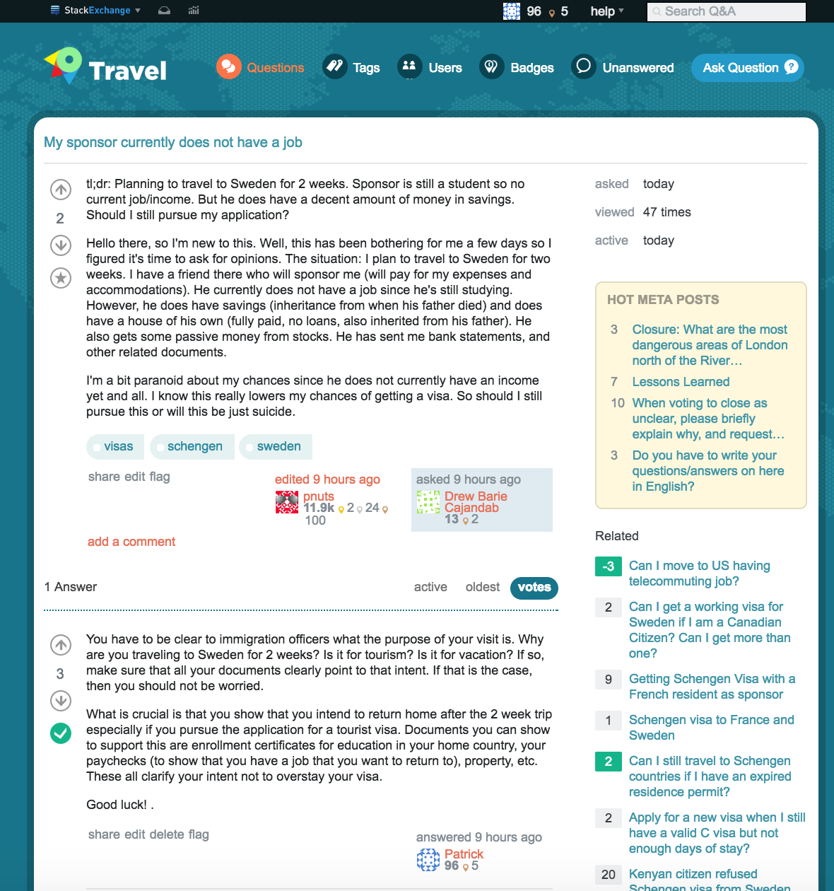

This week's CommTech-Yalla-Lets-Do-Something-Fun task is to join an Exchange website, and explore different features of the website, including posting a question, adding a comment, answering questions, among others. The bigger question I see here is: How does the Exchange network serve as a platform for getting answers?
Approach
As travel was something that I was really interested in, I was really happy that were was an exchange site for it. To prepare myself, I actually read the help page, where I learned how the exchange site works.
Process
With an understanding of how the platform works, I hopped on in and started answering questions. I answered questions I had quite a lot of background in, and within half an hour, I've accumulated over 80 reputation points and 5 badges. You can find one of those questions I answered, and got correctly above!
Exeprience
I would have to say that my experience with this network was phenomenal. And why do I say that? That is because they have really high standards for getting questions answered right.
What I mean by that is that they have a very active community that double checks for previously answered questions, questions posted questions to ensure that the question is within the bounds of the exchange site, as well as ensure that newbies are nicely integrated into the platform.
What's also interesting is that as opposed to other sites like Quora or Yahoo Answers, Travel Exchange focuses on facts and not opinions. The fact that they only allow factual answers really expedites the process for people who want and need answers. Their low tolerance for bigotry, name-calling or disrespectful conversation really make the platform great.
Another feature I find particularly interesting is the fact that privileges are unlocked with more reputation points (that are garnered from upvotes) I find this a great way for people to be held responsible to their insights and actions.
Insights
The Exchange network is a great revolutionary way to really get answers to your questions. The quality of answers available here is just unbelievable. I think the platform really facilitates intelligent questions and answers. This is because of the very active monitoring anc community policing done. This ensures that questions previously answered are not answered again, whilst also providing for bounties to questions that have not been answered after a long time. I find this a really great way to continue getting great answers to questions.
This is a platform I know I will continue to be active in.
I think being able to explore one of these stack sites was a really great opportunity to learn about new forms of participatory communication, of which, the Travel Exchange is obviously one.